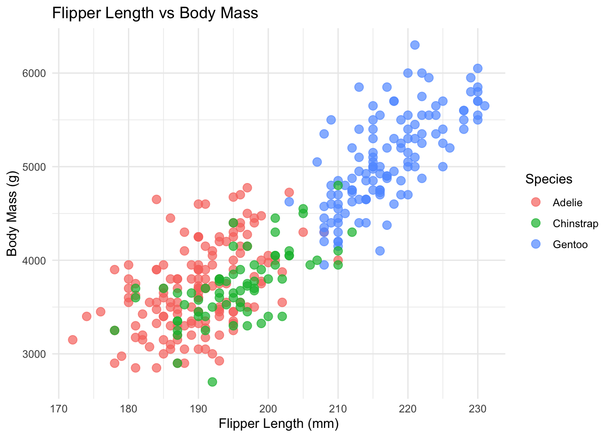
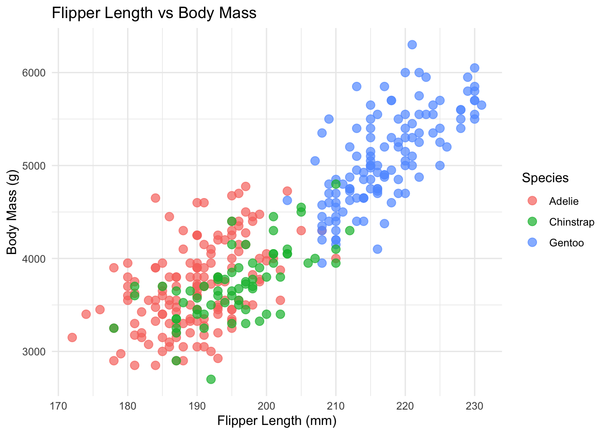

Let’s walk through how you create your own scrollytelling story with closeread!

Scrollytelling
Let’s walk through how you create your own scrollytelling story with closeread!
Have you ever wanted to go beyond the traditional structure of a qmd? Is the interactivity on your website not cutting it for you? Scrollytelling is a powerful data storytelling tool that allows you to invite your reader to “take a walk in the data’s shoes”. The closeread quarto extension provides flexibility on interactive customizations to tell your story the way you want.
Type “Yes” when prompted to allow the extension to execute code
To start, make sure you have added the closeread quarto extension. Navigate to your project directory where you plan to use closeread. Scroll to find out what to paste into your terminal!
Now that the setup is done, let’s get started!!
The Main Components
The Main Components
Stickies: Think of the stickies as a sticky note - stuck in place! As the user starts to scroll, stickies remain in place. Stickies can take the form of text, an image, or a code chunk.
The Main Components
Stickies: Think of the stickies as a sticky note - stuck in place! As the user starts to scroll, stickies remain in place. Stickies can take the form of text, an image, or a code chunk.
Triggers: Prompt the moving text, image, or plot that moves past your stickies.
This is an example of a trigger! It moves as you scroll!
This is a second example of a trigger! Notice how our stickie is still there!
This is an example of a stickie!! As you scroll, the text will stay in place until you get to a new section.
Triggers can also be plots! Scroll to see


Every closeread document is built from sections. Within each section, you’ll specify a layout that controls where your narrative and sticky content appear. There are five layout options to choose from.
sidebar-left (default)
Narrative scrolls on the left
sidebar-right
Narrative scrolls on the right
overlay-left
Full-screen sticky with floating narrative on left
overlay-center
Full-screen sticky with centered floating narrative
overlay-right
Full-screen sticky with floating narrative on right
Choose the layout that best showcases your story!
::::{.cr-section layout="LAYOUT-NAME"}
Content goes here!
::::Scroll back up if the terms stickie or trigger aren’t making sense yet. Otherwise, keep scrolling to find out how to code them!
To create a sticky, wrap your element in a fenced div and provide an ID prefixed with cr-. Stickies will look like this in your qmd file:
To create a trigger, reference your sticky ID using the @cr- syntax. When this text scrolls into view, it will reveal your sticky!
Creating a Sticky:
:::{#cr-YOUR-ID}
Your content goes here!
(text, image, plot, code, etc.)
:::#cr-Creating a Trigger:
Your narrative text goes here. @cr-YOUR-IDOr wrap multiple blocks:
:::{focus-on="cr-YOUR-ID"}
Your narrative text goes here.
More text here too!
:::@cr- for single paragraph triggersfocus-on= for multi-block triggersLet’s see it in action! This text you’re reading right now is a trigger. It scrolls past while the sticky on the left stays fixed.
See how this text is different from the sticky? This is a second trigger - it scrolls into view while the sticky stays put!
And this is a third trigger! No matter how many triggers reference the same sticky, it stays locked in place until you scroll to a new section.
I am the STICKY!
I stay fixed in place while the triggers on the right scroll past me.
In your .qmd file I look like this:
:::{#cr-live-example}
I am the sticky!
:::And my triggers look like this:
This text is a trigger! @cr-live-example